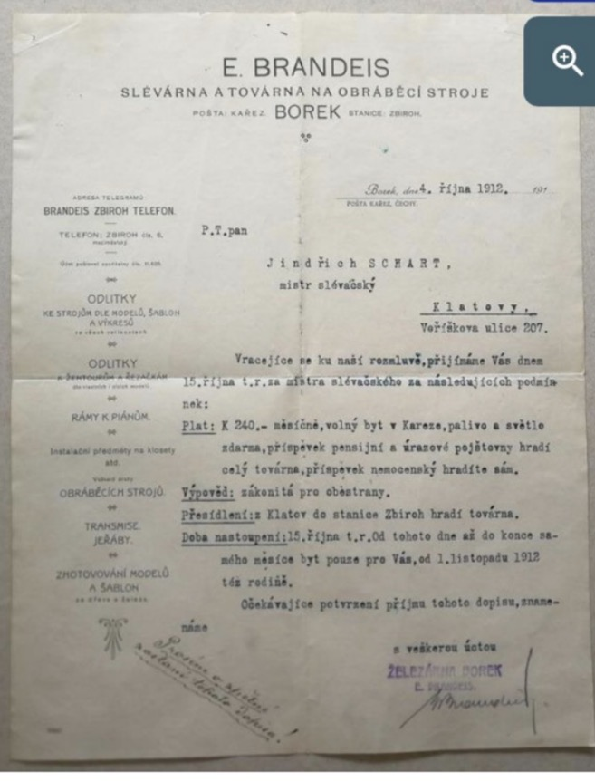
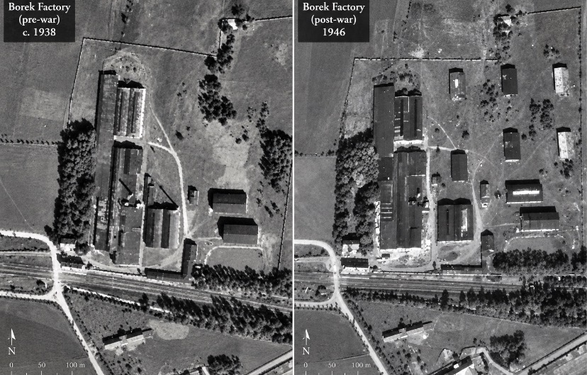

Why this archive exists
This archive began with a question: why was such a large railway station built here? Investigation led beyond the station to industrial records, company catalogues, maps and photographs documenting a history now largely absent from public view.
A central discovery was the surviving catalogue of the Borek factory, an industrial enterprise directly connected with Zbiroh station. The scale and range documented in the surviving material indicate an enterprise which, by modern comparison, would rank as a mid-sized to large industrial concern. The company history also records the combination of E. Brandeis's Borek ironworks with Franz Eisenschimmel & Co.'s agricultural-machinery enterprise, helping to explain the unusually broad range represented in the surviving catalogue.

Source: Historical factory catalogue; archival material digitised by the State District Archive in Rokycany at the request of the Stanice Zbiroh research project.
A factory system that employed and housed a worker and his family
This E. Brandeis letter appoints Jindřich Scharf of Klatovy as foundry master from 15 October 1912. The offer specifies a salary of 240 crowns per month, a free flat in Kařez, and fuel and light without charge. The factory undertook to pay the pension and accident-insurance contributions and the cost of moving to Zbiroh station; Scharf was to pay his own sickness-insurance contribution.
The housing provision is especially revealing. The flat was to be available first for Scharf himself and, from 1 November 1912, also for his family. The company was therefore not simply purchasing labour at the factory gate: it was helping to move, house and support a skilled worker and his household within the Borek–Kařez industrial settlement.
The printed letterhead also advertises a broad chain of work: foundry castings made from models, templates and drawings; components for agricultural machinery; piano frames; machine tools; transmissions and cranes; and the making of models and templates. Read alongside the factory housing, hotel, railway connection and wider catalogue, this supports an interpretation of Borek as an integrated industrial ecosystem—a company that combined production, specialist knowledge, logistics and social infrastructure in one place.
A modern comparison might be a large technology company that brings research, production and employee services into a single system. Historically, the more important comparison is with Strousberg’s earlier model at Borek. Strousberg’s collapse fractured the original industrial empire and created serious discontinuity, but the later Brandeis enterprise did more than passively occupy what remained. It adapted the inherited industrial settlement, combined old infrastructure with new production and specialist skills, and built a functioning social system around its workforce. The 1912 letter is therefore evidence of renewal and innovation after collapse, as well as continuity in method and infrastructure. It does not prove that the later company reproduced Strousberg’s organisation unchanged, or that all raw materials were extracted or obtained entirely in-house.
{kind=link}

A later municipal or local historical account states that production at Borek ceased during the Depression in 1932. No contemporary closure, liquidation or production record located by this project has yet established exactly what “ceased” meant in practice: whether the whole industrial operation stopped permanently, whether some production continued at reduced capacity, or whether different parts of the works followed different paths.
A separate clue appears in the later Original Melichar catalogue sequence at Brandýs nad Labem. Related machinery and comparative catalogue imagery suggest continuity involving former Borek products, designs or technical inheritance. This is an important research lead, but it does not by itself establish the legal date or terms of any transfer, nor the final day of production at Borek.
An unexpected discovery while researching Borek Airfield
On Thursday, 17 September 2026, while examining official ČÚZK historical aerial photographs for the research into Borek Airfield, attention shifted to the factory immediately beside the airfield. Comparison of the 1938 and 1946 images revealed a second anomaly: by 1946 the industrial complex appears substantially changed and enlarged, including additional structures on land that appears open in 1938. Over the same interval, airfield infrastructure visible in the 1938 image appears to have disappeared.
The photographs establish a visible physical change in the landscape. They do not by themselves establish when each additional structure was built, what the buildings were used for, whether industrial production continued through the period, why the airfield infrastructure disappeared, or whether the changes at the factory and airfield were connected.
Placed beside the account that Borek production had ceased in 1932, however, the aerial evidence creates a new and important research question: what was happening at the Borek factory between 1938 and 1946?
{kind=link}

Official ČÚZK survey identifiers:
1938 — WMSA08.1938.HORO61.08459 · official survey view
1946 — WMSA08.1946.HORO62.10387 · official survey view
Preserved research copies: source image 1 · source image 2 · side-by-side comparison · full Borek Airfield evidence note.
{kind=link}
{kind=link}
If this history has been forgotten, what else has been forgotten?
This site assembles primary sources, archival records and field research for examination. Some questions can be resolved; others remain open. Relevant documents, photographs, corrections, archival references and historical memories are invited.
Explore the archive
The collection is organized by subject and by type of evidence. Begin with a historical narrative, follow a person or institution, or go directly to the source catalogue.
Catalogue analysis
Evidence status: The following is working analysis and is presented separately from the primary PDF. Individual claims should be checked against catalogue pages and independent archival sources before being treated as established historical fact.
The catalogue documents Železárna Borek a továrna hospodářských strojů, akc. spol. (Brandeis–Eisenschimmel), an industrial enterprise operating in Czechoslovakia in the early twentieth century.
Industrial scope
The working analysis describes an enterprise extending beyond agricultural machinery into foundry work, machine tools and construction equipment, with references to worker housing, a factory hotel and logistical connections with Kařez and Zbiroh station.
Capitalisation and modern comparison
Contemporary and later research sources currently give differing capital figures of approximately 2.4–2.6 million crowns. Modern corporate-value comparisons remain interpretive rather than historical valuations and should be treated accordingly.
Open the Factory Catalogue page for the primary PDF, detailed analysis and source context.
Research standard
The archive follows a simple rule: the strength of the language must not exceed the strength of the evidence.
Documented timeline
Strousberg and the early Borek industrial landscape
The nineteenth-century ownership sequence is being reconstructed from primary records. See the Bethel Henry Strousberg page.
Business postcard signed “E. Brandeis”
The archive includes a 1908 business postcard signed “E. Brandeis”. Attribution to a specific individual is treated separately.
Historical image of the Brandeis factory
The archive contains historical imagery documenting the factory complex.
Industrial product catalogue
Reported cessation of Borek production
A later municipal or local account places the end of production in 1932. The exact operational meaning of this statement remains under investigation.
The factory footprint changes
The ČÚZK aerial comparison identified on 17 September 2026 appears to show additional structures at the factory by 1946 while nearby airfield infrastructure visible in 1938 has disappeared. The purpose, timing and relationship of these changes remain unresolved.
Emil Brandeis deported to Terezín
Archival material identifies Emil Brandeis, born in 1868 and resident in Kařez, and records his deportation to Terezín and subsequently Treblinka.
Factory production during the Second World War
No verifiable evidence has yet established the factory's specific wartime production, so the question remains open.
Contribute evidence
Documents, photographs, corrections, archival references, source links and historical leads can be submitted directly to the archive. Name and email are optional. Please include sources wherever possible.
Proč tento archiv vznikl
Tento archiv začal otázkou: proč zde byla postavena tak velká železniční stanice? Pátrání vedlo od stanice k průmyslovým záznamům, firemním katalogům, mapám a fotografiím, které dokumentují historii dnes z velké části nepřítomnou ve veřejném povědomí.
Jedním z hlavních objevů byl dochovaný katalog továrny Borek, průmyslového podniku přímo spojeného se stanicí Zbiroh. Historie podniku zahrnuje také spojení železáren E. Brandeise v Borku s továrnou zemědělských strojů Franz Eisenschimmel & Co., což pomáhá vysvětlit široký výrobní rozsah doložený katalogem.
Tovární systém, který zaměstnal a ubytoval pracovníka i jeho rodinu
Dopis firmy E. Brandeis přijímá Jindřicha Scharfa z Klatov za mistra slévačského od 15. října 1912. Nabídka stanoví plat 240 korun měsíčně, volný byt v Kařezu a palivo a světlo zdarma. Továrna měla hradit příspěvky na penzijní a úrazové pojištění a náklady přestěhování do stanice Zbiroh; Scharf si měl hradit nemocenské pojištění sám.
Byt měl být nejprve k dispozici Scharfovi a od 1. listopadu 1912 také jeho rodině. Podnik tedy nezajišťoval pouze práci: pomáhal kvalifikovaného pracovníka přestěhovat, ubytovat a začlenit jeho domácnost do průmyslového sídla Borek–Kařez.
Firemní hlavička zároveň uvádí široký výrobní řetězec: slévárenské odlitky podle modelů, šablon a výkresů, součásti hospodářských strojů, rámy k pianům, obráběcí stroje, transmise a jeřáby i zhotovování modelů a šablon. Spolu s továrním bydlením, hotelem, železničním spojením a katalogem to podporuje výklad Borku jako integrovaného průmyslového systému.
Moderní přirovnání k velké technologické společnosti pomáhá popsat rozsah, historicky je však důležitější návaznost na Strousbergův model. Strousbergův pád původní průmyslové impérium rozložil a způsobil vážnou diskontinuitu, pozdější Brandeisův podnik však nezůstal jen pasivním uživatelem toho, co přežilo. Přizpůsobil zděděné průmyslové sídlo, spojil starou infrastrukturu s novou výrobou a odbornými znalostmi a kolem pracovníků vytvořil fungující sociální systém. Dopis z roku 1912 je proto dokladem obnovy a inovace po kolapsu i kontinuity metody a infrastruktury. Nedokazuje, že pozdější podnik beze změny převzal Strousbergovu organizaci ani že všechny suroviny získával vlastními prostředky.
Pozdější obecní či místní historický přehled uvádí, že výroba v Borku skončila během hospodářské krize roku 1932. Dosud však nebyl nalezen dobový doklad, který by přesně určoval, zda šlo o úplné a trvalé ukončení provozu, omezení výroby nebo rozdílný vývoj jednotlivých částí závodu. Další stopu představuje pozdější katalogová řada Original Melichar v Brandýse nad Labem, která naznačuje návaznost některých výrobků, konstrukcí nebo technického dědictví Borku, aniž by sama dokazovala právní podmínky či datum převodu.
Nečekaný objev při výzkumu letiště Borek
Ve čtvrtek 17. září 2026, při zkoumání historických leteckých snímků ČÚZK kvůli letišti Borek, upoutala pozornost také továrna bezprostředně vedle letiště. Srovnání snímků z let 1938 a 1946 ukazuje, že průmyslový areál se do roku 1946 jeví jako podstatně změněný a rozšířený, včetně staveb na plochách, které jsou na starším snímku otevřené. Současně infrastruktura letiště viditelná v roce 1938 na snímku z roku 1946 zřejmě chybí.
Snímky samy neurčují, kdy byly jednotlivé stavby postaveny, k čemu sloužily, zda v tomto období pokračovala průmyslová výroba ani zda změny továrny souvisely se zánikem letištní infrastruktury. Ve spojení s tvrzením o ukončení výroby v roce 1932 však vzniká zásadní nová otázka: co se v továrně Borek dělo mezi lety 1938 a 1946?
ČÚZK: 1938 — WMSA08.1938.HORO61.08459 · 1946 — WMSA08.1946.HORO62.10387
zdrojový snímek 1 · zdrojový snímek 2 · srovnání · podrobná poznámka k letišti Borek
Jestliže byla zapomenuta tato historie, co dalšího bylo zapomenuto?
Analýza katalogu
Stav důkazů: Následující text je pracovní analýza oddělená od primárního PDF.
Katalog dokumentuje společnost Železárna Borek a továrna hospodářských strojů, akc. spol. (Brandeis–Eisenschimmel).
Otevřít stránku továrního katalogu s primárním PDF a podrobnou analýzou.
Výzkumný standard
Archiv se řídí jednoduchým pravidlem: síla formulace nesmí překročit sílu důkazů.
Warum dieses Archiv existiert
Dieses Archiv begann mit einer Frage: Warum wurde hier ein so großer Bahnhof gebaut? Die Untersuchung führte vom Bahnhof zu Industrieunterlagen, Firmenkatalogen, Karten und Fotografien, die eine Geschichte dokumentieren, die heute weitgehend aus der öffentlichen Wahrnehmung verschwunden ist.
Eine zentrale Entdeckung war der erhaltene Katalog der Borek-Fabrik. Zur Unternehmensgeschichte gehört auch die Verbindung der Boreker Eisenwerke von E. Brandeis mit Franz Eisenschimmel & Co., wodurch sich die große Bandbreite des erhaltenen Katalogs besser verstehen lässt.
Ein Fabriksystem, das einen Arbeiter und seine Familie beschäftigte und unterbrachte
Das Schreiben von E. Brandeis stellt Jindřich Scharf aus Klatovy als Gießereimeister zum 15. Oktober 1912 ein. Angeboten wurden 240 Kronen monatlich, eine freie Wohnung in Kařez sowie kostenloser Brennstoff und Licht. Die Fabrik übernahm Beiträge zur Pensions- und Unfallversicherung und die Umzugskosten bis zum Bahnhof Zbiroh; den Krankenversicherungsbeitrag sollte Scharf selbst tragen.
Die Wohnung war zunächst für Scharf selbst und ab 1. November 1912 auch für seine Familie vorgesehen. Das Unternehmen kaufte somit nicht nur Arbeitskraft am Fabriktor ein: Es half, einen qualifizierten Arbeiter und seinen Haushalt in die Industriesiedlung Borek–Kařez zu versetzen und dort unterzubringen.
Der Briefkopf nennt zugleich eine breite Produktionskette: Gussstücke nach Modellen, Schablonen und Zeichnungen, Teile für Landmaschinen, Klavierrahmen, Werkzeugmaschinen, Transmissionen und Kräne sowie die Herstellung von Modellen und Schablonen. Zusammen mit Werkswohnungen, Fabrikhotel, Bahnanschluss und Katalog stützt dies die Deutung Borks als integriertes industrielles System.
Ein moderner Vergleich mit einem großen Technologieunternehmen kann den Umfang veranschaulichen. Historisch wichtiger ist die Beziehung zu Strousbergs früherem Modell. Strousbergs Zusammenbruch zerschlug das ursprüngliche Industrieimperium und verursachte einen tiefen Bruch; das spätere Unternehmen von Brandeis nutzte jedoch nicht nur passiv die verbliebenen Anlagen. Es passte die übernommene Industriesiedlung an, verband ältere Infrastruktur mit neuer Produktion und Fachwissen und schuf um seine Beschäftigten ein funktionierendes soziales System. Das Schreiben von 1912 belegt daher Erneuerung und Innovation nach dem Zusammenbruch ebenso wie eine Kontinuität von Methode und Infrastruktur. Es beweist weder eine unveränderte Übernahme von Strousbergs Organisation noch, dass sämtliche Rohstoffe im eigenen Unternehmen gewonnen oder beschafft wurden.
Eine spätere kommunale oder lokale Darstellung nennt 1932 als Ende der Produktion in Borek. Ein zeitgenössischer Beleg dafür, was dieses Ende betrieblich genau bedeutete, wurde bislang nicht gefunden. Eine weitere Spur ist die spätere Katalogfolge Original Melichar in Brandýs nad Labem, die auf eine Kontinuität bestimmter Boreker Produkte, Konstruktionen oder technischen Kenntnisse hindeutet, ohne die rechtlichen Bedingungen oder das Datum einer Übertragung zu beweisen.
Eine unerwartete Entdeckung bei der Untersuchung des Flugplatzes Borek
Am Donnerstag, dem 17. September 2026, wurden historische Luftbilder des ČÚZK für die Forschung zum Flugplatz Borek untersucht. Dabei fiel auch die unmittelbar benachbarte Fabrik auf. Der Vergleich von 1938 und 1946 scheint einen deutlich veränderten und erweiterten Industriekomplex zu zeigen, darunter zusätzliche Bauten auf zuvor offenen Flächen. Gleichzeitig scheint die 1938 sichtbare Flugplatzinfrastruktur bis 1946 verschwunden zu sein.
Die Fotografien belegen eine sichtbare Veränderung der Landschaft. Sie belegen jedoch nicht, wann die einzelnen Bauten entstanden, wozu sie dienten, ob die industrielle Produktion in diesem Zeitraum fortbestand oder ob die Veränderungen an Fabrik und Flugplatz miteinander zusammenhingen. Zusammen mit der Darstellung eines Produktionsendes 1932 entsteht jedoch eine wichtige neue Forschungsfrage: Was geschah in der Borek-Fabrik zwischen 1938 und 1946?
ČÚZK: 1938 — WMSA08.1938.HORO61.08459 · 1946 — WMSA08.1946.HORO62.10387
Quellbild 1 · Quellbild 2 · Vergleich · ausführliche Borek-Flugplatz-Notiz
Wenn diese Geschichte vergessen wurde, was wurde noch vergessen?
Kataloganalyse
Belegstatus: Der folgende Text ist eine Arbeitsanalyse und wird vom Primär-PDF getrennt dargestellt.
Der Katalog dokumentiert die Železárna Borek a továrna hospodářských strojů, akc. spol. (Brandeis–Eisenschimmel).
Seite des Fabrikkatalogs mit Primär-PDF und ausführlicher Analyse öffnen.
Forschungsstandard
Das Archiv folgt einer einfachen Regel: Die Stärke der Formulierung darf die Stärke der Belege nicht übersteigen.